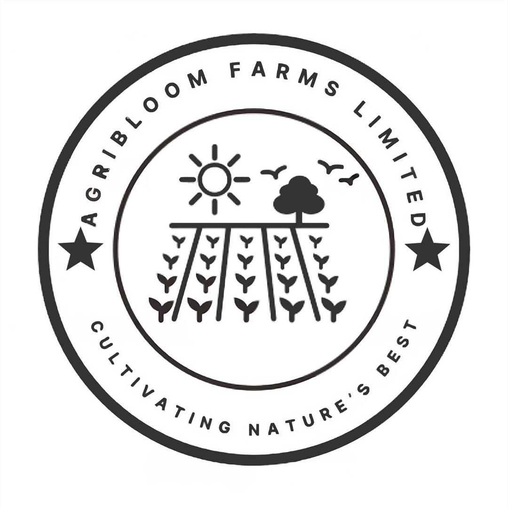
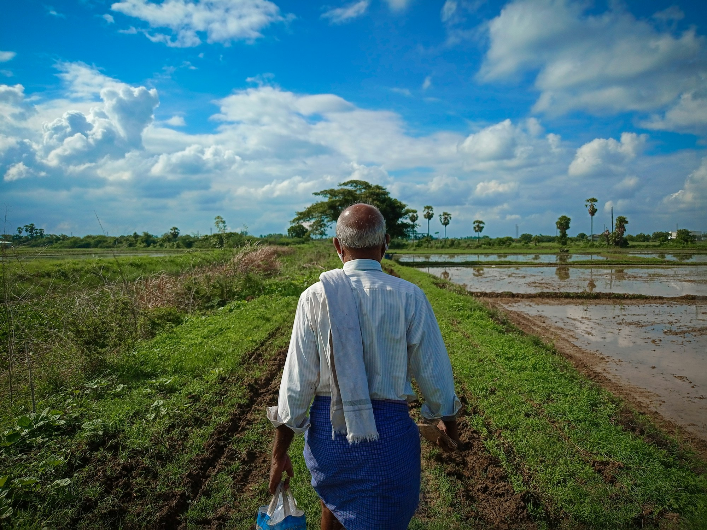
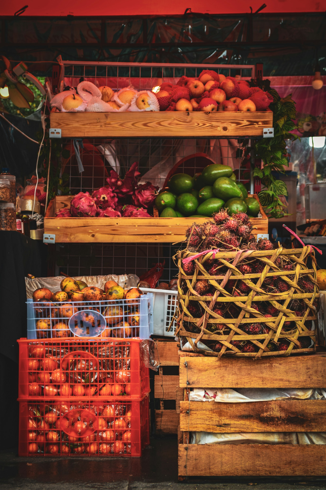

AGRIBLOOMFARMS

Our operations
Rooted in the field. Focused on delivery.
The people, land, and handling steps that connect growing with buyer-ready produce.
Farm to pack
One connected operation.
Our operating approach brings together crop planning, field management, harvest, quality review, and preparation for market. This connection helps the team respond clearly to product specifications and seasonal conditions.
Verified farm locations, hectares, facility details, and production capacity will be published once approved by management.

How produce moves
From careful growing to careful handling.
- Farm and crop planning
- Harvest coordination
- Quality checking and grading
- Packing against buyer needs
- Logistics coordination
Talk to our team